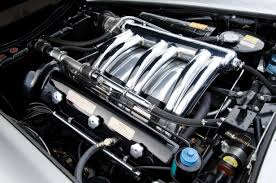
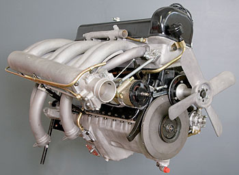
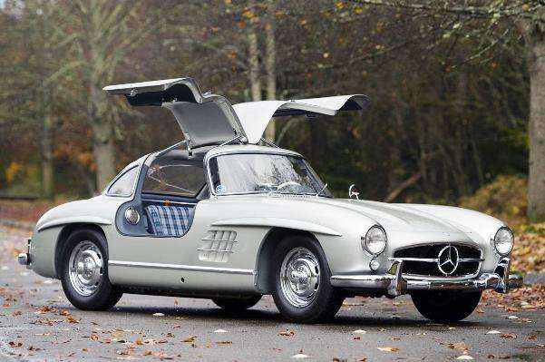

Mercedes-Benz 300 SL
O Mercedes-Benz 300 SL (código de chassi W 198) foi produzido de 1954 a 1963. Foi produzido pela primeira vez como um Cupê de 1954 a 1957 com portas de gaivota e depois de 1957 a 1963 como um Roadster. O combustível injetado direta versão de produção foi baseada em menos poderoso alimentado por carburador da empresa DOHC straight-6 motor de 1.952 piloto, o W194 . A Mercedes-Benz apresentou o 300 SL em fevereiro de 1954 no International Motor Sports Show, em Nova York, e não na Europa, e foi em grande parte a criação de Max Hoffman no marketing . Foi eleito o "carro esportivo do século" em 1999. 300 refere-se ao seu deslocamento do motor de 300 centilitros ou mais especificamente 2.996 cc (182,8 cu in). SL é a forma abreviada de "superluz" em alemão e refere-se à construção da estrutura tubular leve.
Especifições
 O carro tem uma água refrigerada a 3,0 L; Motor de seis cilindros em linha Mercedes-Benz M198 de 182,8 cv (2.996 cc) na cabeça . Como o W194, o 300 SL emprestou a válvula básica M186 de 2 válvulas por cilindro do tourer de luxo regular de quatro portas 300 (W186 "Adenauer") introduzido em 1951. Apresentava um cabeçote de alumínio diagonal inovador que permitia maior consumo e válvulas de escape. Para melhorar o desempenho, o M198 adicionou a injeção direta mecânica de combustível da Bosch e a lubrificação do cárter seco , o que garantiu boa lubrificação com óleo nas curvas em alta velocidade e redução da altura do motor, eliminando um cárter tradicional. A compressão foi definida em 8,55: 1 para o Coupe e 9,5: 1 para o Roadster. A potência era de 220 hp (164 kW).
Representatividade
Com motor de 6 cilindros de 3 litros e câmbio manual de quatro marchas, a máquina tem uma potência de 220 cv e pode atingir até 260 km/h. É o tipo de velocidade que transformou o cupê no carro mais rápido do mundo de então. Pudera, ele era baseado no 300 SLR de pista, um monstro que venceu a Mille Miglia de 1955 na Itália com Stirling Moss e também a Targa Florio. Não era pouca coisa.
A estrutura do 300 SL não permitia a inclusão de portas normais em razão da estrutura. Com chassi tubular do tipo space frame muito elevado nas laterais, ele tinha uma soleira alta e larga, sem permitir o uso de portas convencionais, adotadas apenas no 300 SL Roadster. Foi assim que ficou famoso pelas “asas de gaivota” (tradução de Gullwing), aparência das portas aberta. O ícone da Mercedes foi apresentado pela montadora alemã no Salão do Automóvel de Nova York em 1954. Sua produção durou três anos: foi até 1957.
Valor do Carro
Uma empresa de leilões do estado de Arizona, nos Estados Unidos, a Gooding & Company’s Scottsdale vendeu no último fim de semana um Mercedes-Benz 300 SL 1955 com portas asas de gaivota por US$ 4.2 milhões, algo em torno de R$ 7.2 milhões. Esse valor é um recorde para esse modelo. A expectativa era que ele saísse por algo em torno de US$ 2.5 milhões. A Mercedes construiu apenas 29 unidades do modelo com as portas em formato de asas de gaivota.